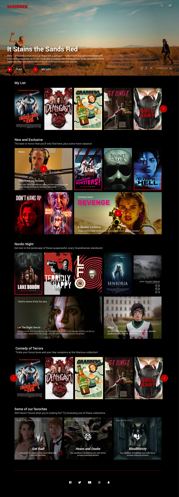
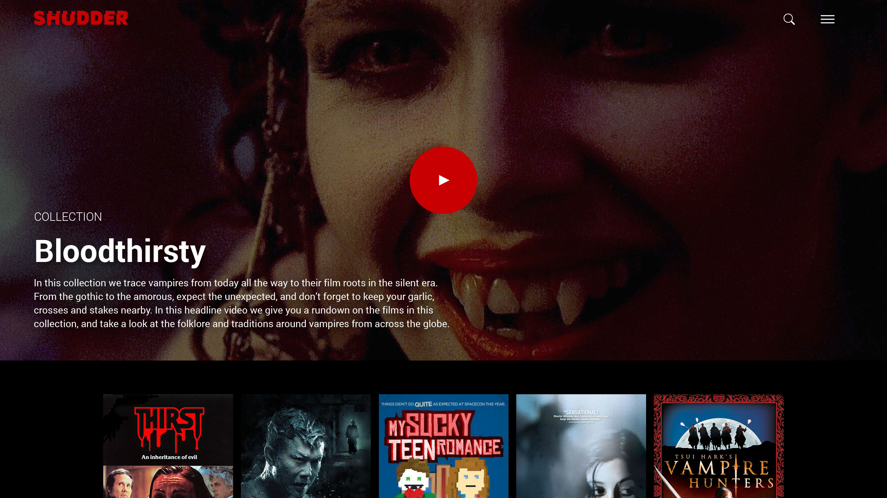
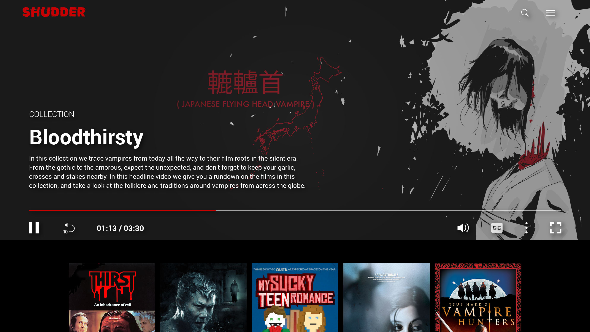
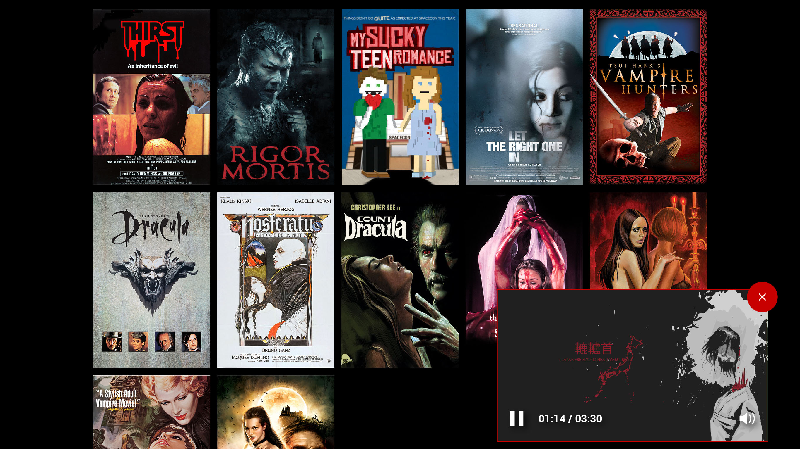
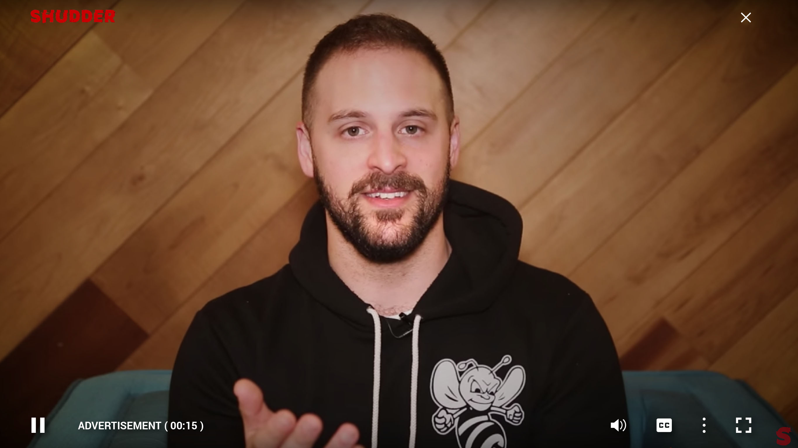
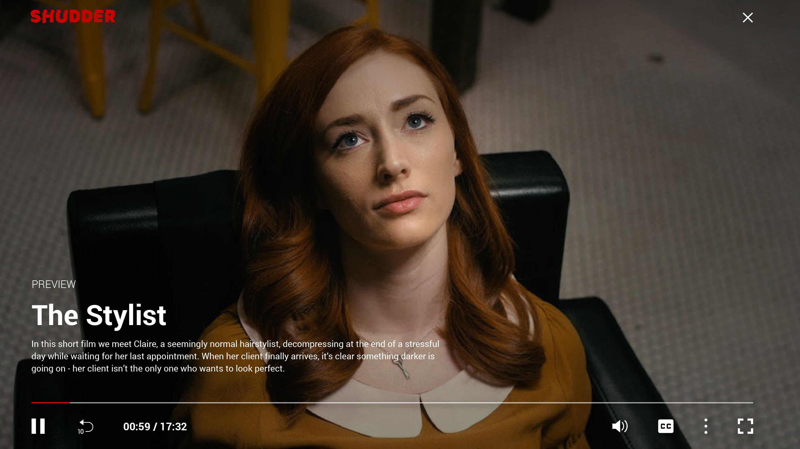
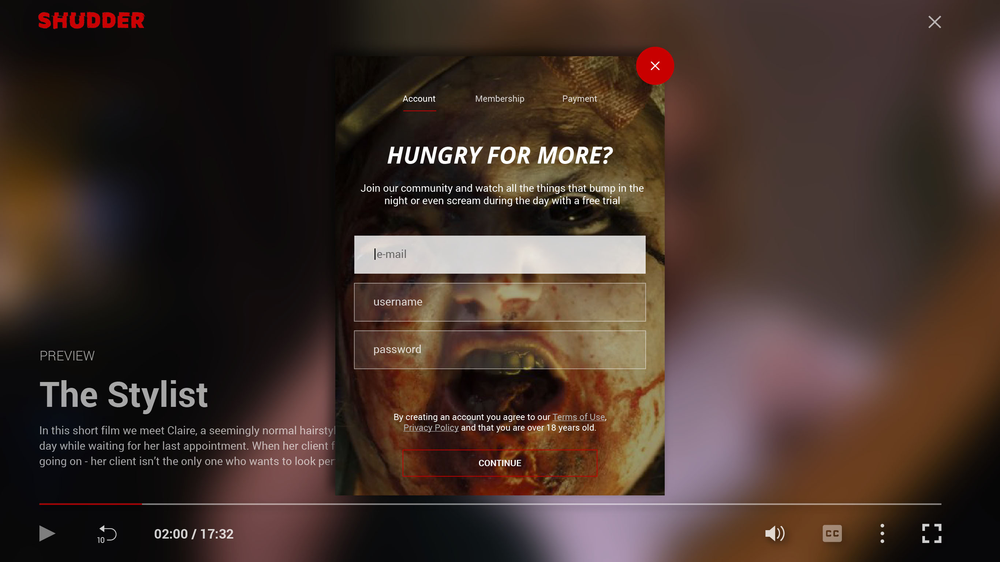

This is a self-initiated redesign of Shudder, a streaming video service that provides horror genre content to their subscribers on a variety of platforms. Shudder exists in a crowded marketplace, one that is continuing to grow, as the internet displaces traditional broadcast services.
The challenge facing Shudder is the need to provide value as the focus on depth of content, only horror/thriller, over breadth (content that appeals to everyone). While it seems obvious, the problem is the larger companies will spend enough incidentally just because of the sheer volume of their subscriber bases. They will also compete against the fact that customers will be paying for multiple content providers, and against the nature of there only being so many hours in a day people are going to watch anything.
The solution is to buck the trend and bring in the social media materials into the main product, and editorialize the site. Like all services, Shudder uses dense layouts - rows of box art that shotgun options at subscribers. But the problem with dense layouts is their reliance on customers foreknowledge of the product (the movie). This foreknowledge is learned through traditional advertising, social media, word of mouth, basically anywhere but the site itself. Customers see some box art, and a decision is made exactly the way it was 30 years ago in a video store.
Shudder is focused on social media, as it should be and has to be. And that means we can pull the materials generated for Facebook and YouTube videos into the site itself - adding a video clerk to our video store. I’ve included a variety of options below, the idea being to create stacked “row” templates, filled with transitory video experiences as well as alternate options to standard box art (such as a film frame with a fact about the film).
Videos created for social media are great, especially videos for upcoming films, what’s new on the service, what’s leaving “so you better watch now”, etc. There’s also an opportunity to educate, like a proper video clerk, on why a film was important, what’s interesting about the film - in a way no amount of crawling through IMDb can do. Shudder can speak to horror fans in a way other services can not - Netflix won’t chat and talk about how important Sergei Eisenstein for film, for example.
I didn’t define transitory video earlier; this is video that doesn’t have a “home” or page it lives on except in the context in which it’s found. These video would play inline, and follow the user as they scroll. In this example a transitory video serves as the ever popular explainer video, for a film collection (Shudder organizes theses the way genre is organized on larger sites). I illustrated this quick example to show to how the video would follow a user who scrolls down the page.
The “signed out” experience for Shudder is a little different than other services currently. As a way to convert visitors, Shudder currently offers a free live stream to any visitor, and a free 7-day trial. Outside of the addition of a “free trial” button, the site currently remains visually unchanged, and users can browse and explore. My idea is to push hard in that direction: allows users to watch the free stream and preview a few minutes of any title in the library, operating the site as a user would.
When the media player is launched in the signed out state, it will automatically play an ad for the service, something Shudder does not do currently, even on it’s free live stream. After a designated time playing anything other than the free stream, the user will be presented a signup modal to begin their free trial.
